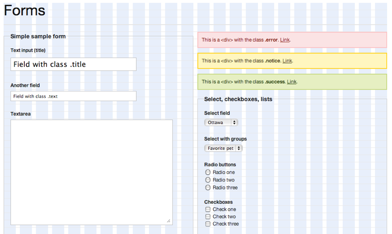
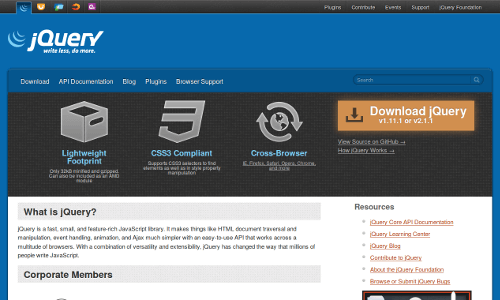
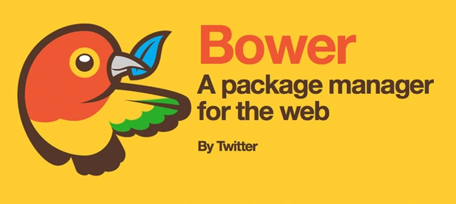
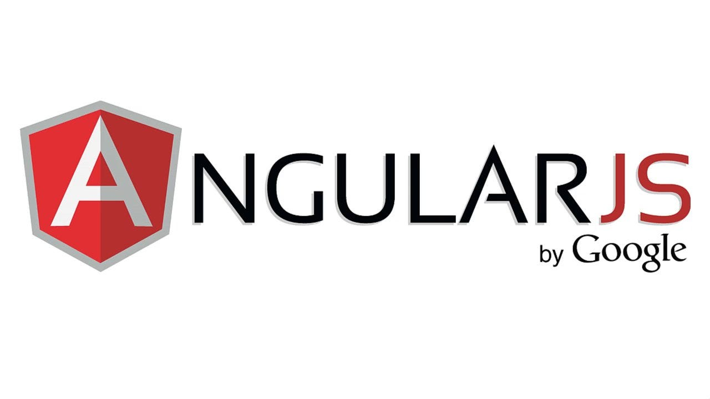
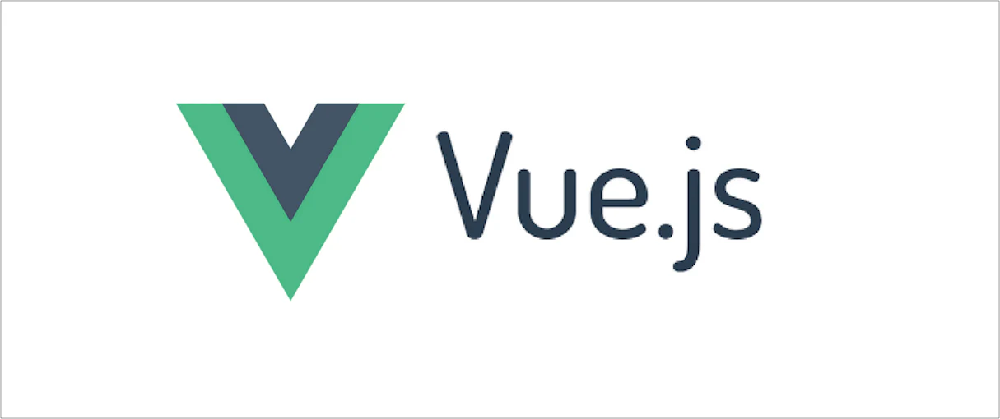

История профессии фронтенд-разработчика
Хронология базовых технологий
Давайте сначала очень быстро взглянем на основные технологии, из которых состоит веб. История HTML, CSS и JavaScript очень богата и может легко заполнить целую книгу. Я выделю лишь часть примечательных моментов, произошедших за последние 30 лет.
Первая спецификация HTML была обнародована в конце 1991 года Тимом Бернерсом-Ли. В то время она поддерживала только текст и состояла всего из 18 тегов. Позже CSS был предложен Хоконом Вием Ли в октябре 1994 года.
Примерно 2 года спустя был опубликован HTML 4.0, который стал первой спецификацией для поддержки CSS. Internet Explorer 3 стал первым коммерческим браузером, поддерживающим CSS. Это было до того, как CSS level 1 стал рекомендацией Консорциума World Wide Web.
В 1995 году Брендан Эйх всего за 10 дней создал новый язык сценариев для браузера под названием Mocha. Он был переименован в LiveScript. Несколько месяцев спустя его снова переименовали в JavaScript, каким мы его сейчас знаем. В настоящее время за разработку спецификаций JavaScript отвечаетEcma International. Спецификации HTML и CSS находятся в ведении Консорциума World Wide Web Consortium, также известного как W3C.
CSS фреймворки
Примерно в середине 2000-х начали появляться библиотеки CSS и фреймворки. Эти фреймворки представили сеточную систему, помогающую веб-дизайнерам верстать свой контент. Фреймворки поддерживали большинство браузеров (одной головной болью для дизайнеров стало меньше). Включены некоторые из самых ранних CSS-фреймворков Blueprint, 960, YUI Grids и YAML.
Когда производители мобильных телефонов начали поставлять устройства с веб-браузерами, не было особых усилий по переделке веб-сайтов для мобильных устройств. Сами мобильные браузеры были способны переформатировать веб-страницы, чтобы они помещались на небольших экранах.
Со временем аппаратное обеспечение телефонов значительно улучшилось. В 2006 году Opera Mobile стал первым мобильным браузером, прошедшим тест ACID2. Safari был первым настольным браузером, прошедшим тестирование.
В 2011 году Twitter выпустил Bootstrap CSS Framework в качестве проекта с открытым исходным кодом. В 2012 году был выпущен Bootstrap 2 с адаптивной системой компоновки сетки из двенадцати столбцов наряду со многими другими новыми функциями. В 2013 году был выпущен Bootstrap 3, в котором были переработаны компоненты и применена философия дизайна, ориентированная на мобильные устройства.
В Bootstrap версии 4, выпущенной в августе 2017 года, добавлена поддержка Sass и Flexbox. Bootstrap в настоящее время является самым популярным CSS-фреймворком. Он более популярен среди разработчиков, которые хотят быстро создать прототип привлекательного веб-интерфейса. В октябре 2011 года ZURB открыла исходный код своего CSS фреймворка и выпустила его как Foundation 2.0. В нем была адаптивная сетка и поддерживался Sass. В нем также был обширный список готовых элементов пользовательского интерфейса. Foundation более популярен среди дизайнеров, которые хотят получить полный контроль над настройкой своего сайта. Foundation также поставляется с шаблонами для электронных писем
Фреймворки JavaScript
Так же, как и CSS, JavaScript прошел через несколько проблем, связанных с совместимостью с браузерами. Вам придется приложить немного дополнительных усилий, чтобы убедиться, что ваш JavaScript-код корректно работает во всех поддерживаемых вами браузерах. Вам также необходимо знать о нескольких его особенностях, особенно если вы используете строго типизированный язык.

Одной из первых библиотек, которая делала работу с JavaScript увлекательной, была jQuery. Она была выпущена в августе 2006 года. Она помогала разработчикам писать JavaScript-код, не беспокоясь о совместимости с браузером. Он содержал массу полезных функций, которые позволяли легко сделать любой веб-сайт интерактивным.
По мере увеличения количества интерфейсных фреймворков и библиотек возникла потребность в управлении зависимостями. В 2012 году Twitter запустил Bower, менеджер пакетов для интерфейсных зависимостей.
В 2014 году было создано центральное хранилище интерфейсных пакетов, получившее название реестр npm. В настоящее время на нем размещено более 350 000 пакетов.
Хотя jQuery была самой популярной библиотекой JavaScript для веб-интерфейсов, ей не хватало средств для согласованной обработки данных в общих представлениях. Для решения этой проблемы было создано несколько фреймворков. Backbone, Knockout и Ember - одни из самых ранних подобных фреймворков JavaScript, которые быстро завоевали популярность. AngularJS появился на рынке в октябре 2010 года. Он быстро стал самым популярным фреймворком JavaScript MVC. Он предлагал двустороннюю привязку данных, внедрение зависимостей, пакет маршрутизации и многое другое.
AngularJS помог разработчикам решить множество проблем, с которыми они сталкивались при создании веб-проектов. Однако по мере роста сложности проекта AngularJS веб-разработчики начали испытывать разочарование в фреймворке. Команда AngularJS решила переработать весь фреймворк и назвать его Angular 2. К сожалению, эта новая версия была полностью несовместима с AngularJS. Не было предоставлено пути миграции. Это привело в ярость многих разработчиков AngularJS, заставив их полностью отказаться от фреймворка. С тех пор Angular не смогла достичь тех показателей, которые были у нее когда-то. В мае 2013 года на конференции JavaScript в США была представлена новая библиотека, меняющая правила игры, под названием React. Он был создан Джорданом Уолком, инженером-программистом Facebook. Аудитория была поражена многими его инновационными функциями, такими как виртуальный DOM, односторонний поток данных и Flux pattern.
Команда React рассказала, как эта архитектура помогла им решить некоторые из самых больших повторяющихся проблем, с которыми они сталкивались при исправлении ошибок Facebook. Вскоре после конференции популярность React быстро возросла. В 2015 году библиотека Redux была создана Дэном Абрамовым и Эндрю Кларком. Это была революционная архитектура потока данных, вдохновленная Flux architecture Facebook.

Осенью AngularJS набирал популярность новый фреймворк, имеющий сходство как с Angular, так и с React. Vue.js, прогрессивный фреймворк JavaScript, был первоначально выпущен в феврале 2014 Эваном Ю. Ранее он работал в Google и Meteor. В отличие от React, который очень гибкий, или Angular, который очень самоуверенный, Vue пытается найти золотую середину. Vue.js представляет собой легкий фреймворк, окруженный экосистемой, которая официально поддерживается командой Vue.
